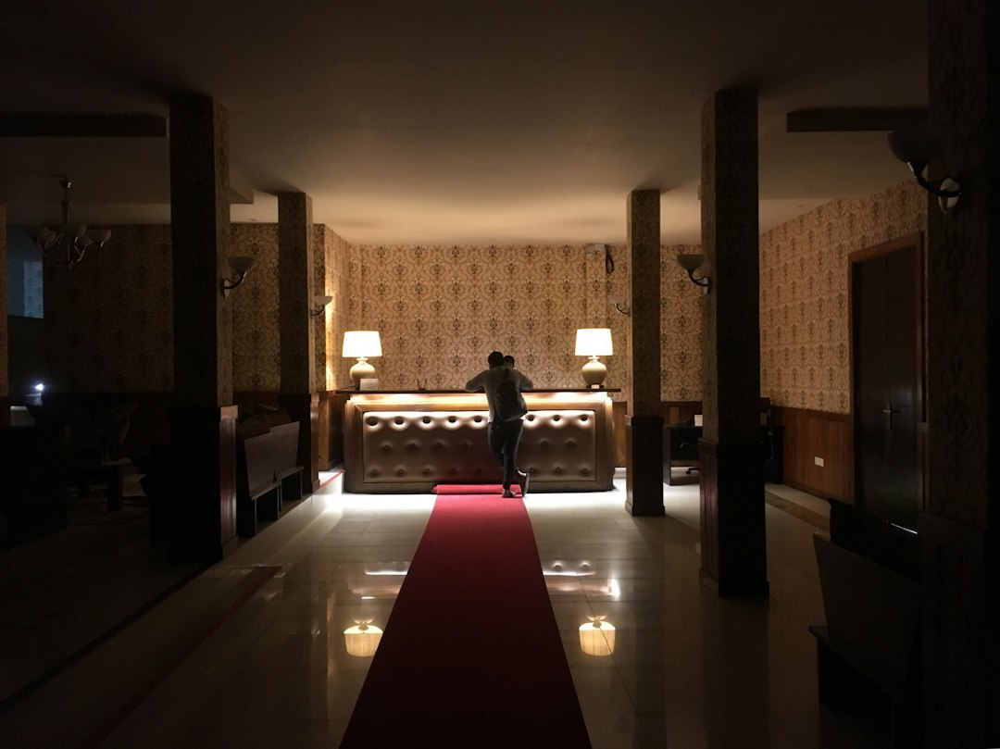

Come Ridurre Sprechi di Tempo e Costi nel Turismo con Concierge24: La Guida per Albergatori e Gestori

Strategie Efficaci per Albergatori e Property Manager: Ridurre Sprechi e Costi Operativi nel Turismo con Concierge24
- Le richieste ripetitive degli ospiti e le barriere linguistiche rappresentano un enorme spreco di tempo e risorse.
- I costi di gestione aumentano senza una soluzione digitale integrata e disponibile 24/7.
- Concierge24, con l'assistente AI Giulia multilingua, automatizza e semplifica la comunicazione, riducendo i costi e migliorando l’esperienza degli ospiti.
Analisi Approfondita della Notizia e delle Implicazioni Operative
Nel settore dell’ospitalità, la crescente complessità delle operazioni quotidiane rivela una sfida cruciale: la gestione efficiente delle richieste degli ospiti, spesso ripetitive e distribuite lungo tutto l’arco delle 24 ore. Dalla richiesta delle credenziali wifi, alle informazioni su parcheggi e ristoranti locali, fino al check-in, queste esigenze impegnano costantemente il personale, assorbendo tempo prezioso e incrementando i costi. A complicare ulteriormente la situazione, la presenza di ospiti stranieri introduce barriere linguistiche che rallentano la comunicazione e compromettono la qualità del servizio.
Questa dinamica operativa impone un ripensamento dell’organizzazione e dell’utilizzo delle tecnologie per rispondere rapidamente e in modo efficace alle richieste, senza gravare sulle risorse umane e finanziarie dell’hotel, B&B, o della struttura ricettiva.
Le Conseguenze e i Costi di Non Agire
I problemi che derivano dall’assenza di soluzioni tecnologiche adeguate sono molteplici e impattano direttamente sulla redditività e sulla percezione del cliente. L’elevato volume di richieste ripetitive genera inefficienze: il personale si districa tra telefonate, messaggi e conversazioni incalzanti, con conseguente aumento dei carichi di lavoro e del rischio di errori.
La mancanza di un supporto multilingua amplifica le difficoltà di comunicazione con turisti stranieri, causando insoddisfazione e potenziali recensioni negative. A livello economico, queste inefficienze si traducono in sprechi di tempo, risorse umane sovraccariche e maggiori costi operativi. Inoltre, il mancato utilizzo di strumenti digitali all’avanguardia può compromettere la competitività sul mercato, soprattutto in un contesto turistico globale e digitalizzato.
Come Concierge24 Risolve il Problema
Concierge24, la piattaforma SaaS sviluppata da RM Studio, si presenta come una soluzione integrata e innovativa per rivoluzionare la gestione operativa in strutture ricettive, B&B, property management e agenzie turistiche. Al centro del sistema c’è Giulia, un assistente virtuale AI vocale e testuale attivo 24/7, capace di interagire in 10 lingue, superando così ogni barriera linguistica potenziale.
Giulia gestisce autonomamente tutte le richieste più comuni degli ospiti, dal check-in al wifi, al parcheggio, alla prenotazione di ristoranti, fornendo risposte immediate, personalizzate e con mappe GPS integrate. L’invio di foto direttamente sullo smartphone dell’ospite aumenta ulteriormente l’utilità e l’esperienza digitale, riducendo il carico delle richieste ripetitive sul personale umano.
Questa automazione intelligente non solo libera tempo prezioso per il team, ma elimina gli errori comunicativi, migliora la soddisfazione degli ospiti e abbassa i costi di gestione quotidiana. Concierge24 inoltre consente di monitorare e analizzare i flussi comunicativi per ottimizzare ulteriormente le risorse e l’offerta.
| Gestione Tradizionale | Con Concierge24 |
|---|---|
| Personale occupato nel rispondere a richieste ripetitive 24/7 | Assistente AI attivo 24 ore su 24, 7 giorni su 7, per richieste comuni |
| Barriere linguistiche con clienti stranieri | Supporto multilingua in 10 lingue per comunicazioni immediate e precise |
| Incremento costi per personale extra e errori di comunicazione | Riduzione costi e errori grazie all’automazione intelligente |
| Difficoltà nel fornire informazioni personalizzate in tempo reale | Consigli su attrazioni e ristoranti con mappe GPS e invio foto |
| Mancanza di analytics su richieste e interazioni | Monitoraggio e analisi dati per ottimizzare le operazioni |
💡 Ti è stato utile questo approfondimento?
Condividilo con un collega o un amico del settore Albergatori, Gestori di B&B, Property Manager e Agenzie Turistiche a cui potrebbe interessare!
FAQ
1. Concierge24 è facile da integrare nelle mie strutture attuali?
Sì, Concierge24 è una piattaforma SaaS nativa che si integra rapidamente con i sistemi esistenti, senza necessità di investimenti hardware aggiuntivi.
2. Può Giulia gestire richieste complesse oltre quelle standard?
Giulia è progettata per automatizzare le richieste frequenti e ripetitive, mentre per situazioni molto complesse può indirizzare l’ospite direttamente al personale competente.
3. Quali lingue supporta l’assistente AI?
Concierge24 gestisce le comunicazioni in 10 lingue diverse, coprendo gran parte del bacino turistico internazionale per superare le barriere linguistiche efficacemente.
Inizia Subito
7 Giorni di prova con 15 minuti inclusi senza carta. Ricariche minuti a consumo da €49.
Fonti Ufficiali e Risorse Esterne
Scopri l'Intelligenza Artificiale per la tua attività
Ottimizza i processi e aumenta le vendite con le soluzioni B2B di RM Studio.
Scopri Concierge24